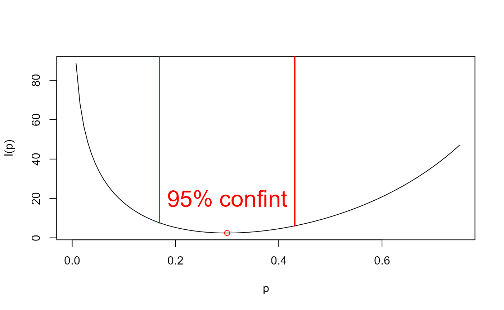

vignettes/01_02_Likelihood_Review.Rmd
01_02_Likelihood_Review.Rmdlayout: true
.footnote[U.S. Department of Commerce | National Oceanic and Atmospheric Administration | National Marine Fisheries Service]
What is the likelihood of getting heads 30 times in 100 coin flips?
Specify the model
\(y ~ \sim
Binomial(n, p)\)
Calculate the likelihood
\(L(p;
n, y) = \frac{n!}{y!(n-y)!}p^y(1-p)^{n-y}\)
\(L(p; n = 100, y = 30)\)
\(-ln\big[L(p; n = 100, y = 30)\big]\)
\(-ln\big[L(p; n = 100, y = 30)\big]\)
\(-ln\big[L(p; N = 100, y =
30)\big]\)
\(\hat{p} = \frac{30}{100} =
0.3\)
\(Var[p] \approx
-\frac{1}{l''(p)}\)
\(SE[p]
\approx \sqrt{ \frac{.3}{100(.7)}} \approx 0.065\)

\[\begin{align} (\mathbb{H}_{f})_{i,j} &= \frac{\partial^2f}{\partial \theta_{i}, \partial x\theta_{j}} = \frac{-1}{Var(\Theta)} \end{align}\]